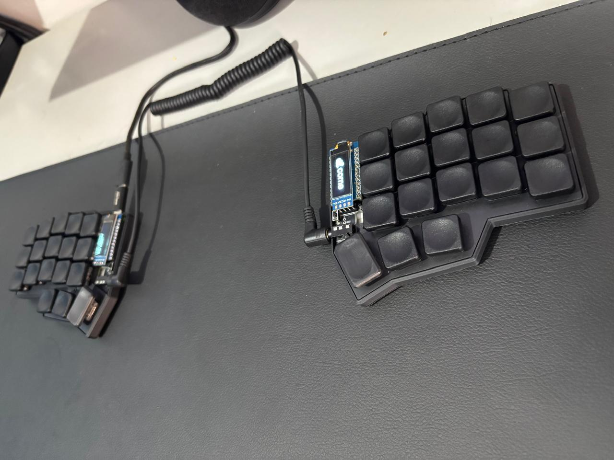

My Journey in Custom Keyboards
Dec 12, 2025 - ⧖ 2 min
Motivation
Around two years ago, I discovered the world of custom keyboards. In Brazil, however, they are not easily accessible, so I first tried to customize a commercial keyboard. Unsurprisingly, customization was extremely limited due to its closed-source firmware. That’s when I decided to build my own keyboard from scratch.
Choosing The Corne
I chose the Corne keyboard because it is well-documented and beginner-friendly. Being an open-source split keyboard, it allowed me to fully customize the layout, keymap, and firmware, which was exactly what I was looking for.
Building Challenges
Building my first keyboard was far from easy. I had never worked with electronics before, and using a soldering iron for the first time was intimidating. I made several mistakes, such as misplacing switches and struggling with soldering pads, but each failure taught me something new.
First Success
After many attempts and setbacks, I finally completed my first keyboard. The feeling was indescribable—I had a fully functional, unique keyboard that I built myself.
Customization and Workflow
I customized the keymap specifically for Python programming. This reduced unnecessary finger movement when typing symbols and numbers, making coding much more comfortable and efficient. I also explored layers and macros, which significantly improved my workflow.
Conclusion
Through this project, I learned not only how keyboards are built, but also how their firmware works. The experience taught me patience, problem-solving, and the joy of creating something truly personalized.